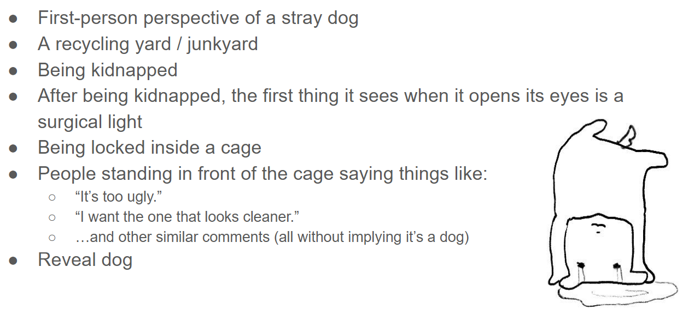
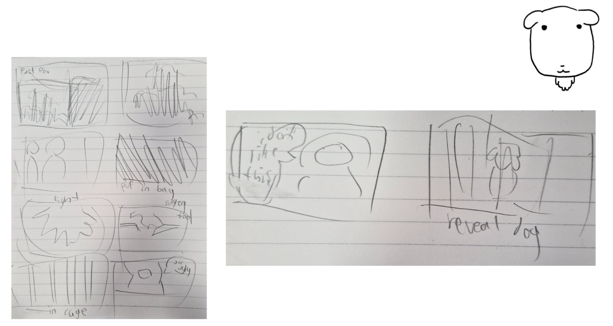
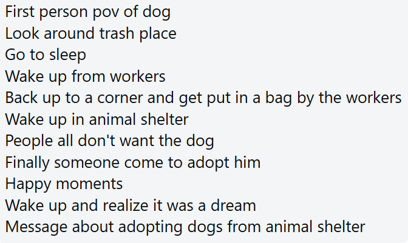

Production Journal ˖°
Video Production Reflection
In this video production, I think the hardest part is to write a script from a dog's perspective, because we
don’t have an actual dog. Our video is supposed to give the audience a sad emotion and make them want to
adopt a dog, how to show this emotion and feeling is a hard part too.
During our recording, it's hard to control the camera like a dog's first-person perspective. Examples like
how fast does a dog move, or the way that dog does things, or how they see this world. So we need to record
a lot of times to make sure the shots are fine. For me this is the most challenging part in this video
production.
Script

Story Boards

Shot List
